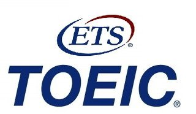

There are a number of tests to show how my English is going. The most popular thing is of course 'TOEIC'
I got 900 score at the last test I took about 2 years ago. Since the expiration date is 2 years since the date you take the test, My score has been expirated.
